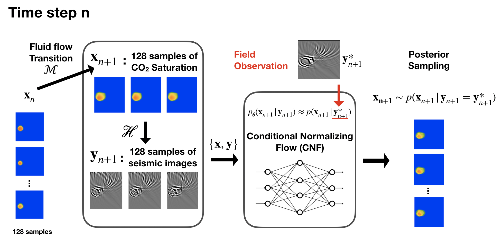

Monitoring Subsurface CO2 Plumes with Sequential Bayesian Inference
empty
empty
\[ \newcommand{\pluseq}{\mathrel{+}=} \]
OBJECTIVES AND SCOPE (597/600 characters)
To monitor and predict CO2 plume dynamics during geological carbon storage, reservoir engineers usually perform two-phase flow simulations. While these simulations may provide useful insights, their usefulness is limited due to numerous complicating factors including uncertainty in the dynamics of the plume itself. To study this phenomenon, we consider stochasticity in the dynamic caused by unknown random changes in the injection rate. By conditioning the CO2 plume predictions on seismic observations, we correct the CO2 plume predictions and quantify uncertainty with machine learning.
METHODS, PROCEDURES, PROCESS (1443/1500 characters)
We propose a method where at each timestep conditional neural networks are trained to generate samples of the CO2 saturation conditioned on current time-lapse seismic data. The method proceeds by generating training pairs consisting of the current CO2 saturation, which is simulated with a random injection rate from the previous timestep, and the associated reverse-time migration seismic image computed from simulated surface data. Given these training pairs, an amortized conditional normalizing flow (NF) is trained to approximate the posterior distribution for the saturation given seismic images. After training, the network is capable of drawing samples from the posterior distribution of the saturation given observed time-lapse seismic data at the current timestep. In turn, these samples for the CO2 saturation serve as input to two-phase flow simulations to predict the CO2 plume at the next timestep and the process repeats itself, recursively.
Compared to more traditional data assimilation techniques, our approach has the distinct advantage that it does not make simplifying assumptions on the statistics and linearity of the CO2 plume dynamics and its coupling to time-lapse seismic data. The proposed method is also likelihood free. It only needs to be able to run simulations of the plume dynamics that may contain hidden stochastic terms. In our case, this stochastic term in the randomly varying injection rate.

RESULTS, OBSERVATIONS, CONCLUSIONS (1146/1500 characters)
We make CO2 plume predictions using both conditioned by seismic and unconditioned simulations. The conditional mean of the posterior samples is used for the seismic-conditioned predictions, while the unconditioned predictions are given by the ensemble mean over the different simulations at each timestep. Figure 2 shows that seismic-conditioned predictions are more accurate in predicting the ground truth and have a smaller conditional sample variance than the unconditioned ensemble mean predictions.
By examining the difference between the ground truth and predictions, we characterize the uncertainties. For the seismic-conditioned predictions, the uncertainties are located near the injection well. In addition, the plume’s boundary is well-predicted by the seismic-conditioned method while the unconditioned simulations have, as expected, an increasing uncertainty at the boundary over time and tend to consistently over-estimate the plume extent.
Overall, we conclude that the unconditioned simulation poorly predicts the CO2 plume. Our seismic-conditioned framework assimilates information and learns over time, which improves the CO2 forecasting and characterizes uncertainties.
SIGNIFICANCE/NOVELTY (238/600 characters)
To our understanding, the seismic-conditioned framework is the first geological carbon storage monitoring model that continuously assimilates information with seismic observations, updates the CO2 plume predictions, and characterizes uncertainties on the plume itself. Because or prediction are conditioned by the physics, we expect this method to extend to larger and more realistic model sources of uncertainty (permeability, topology, …).